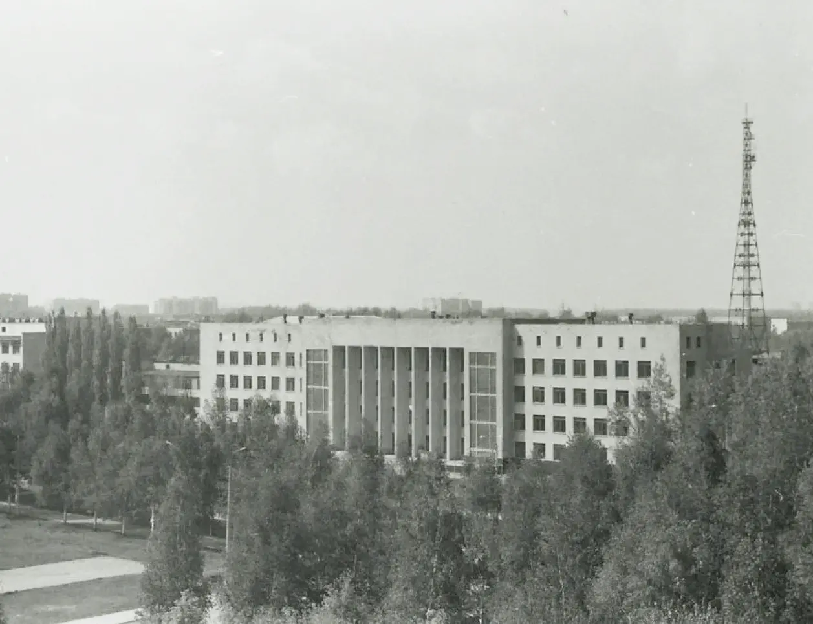

19501958


Состоялся первый выпуск
Окончили институт четырнадцать инженеров по специальности «Машины и оборудование нефтяных и газовых промыслов».
Идет защита дипломных проектов перед государственной экзаменационной комиссией.
председателем комиссии был Лауреат Сталинской премии Герой Социалистического Труда Начальник Объединения «Башнефть» С.И. Кувыкин

1951
Первый выпуск инженеров-технологов по переработке нефти и газа.
1951
Комплексная тема: «Получение спецтоплив методом депарфинизации с помощью мочевины», она имела большое народно-хозяйственное значение для нефтеперерабатывающей промышленности.
По указанию начальника Главвостокнефтепереработки А.М. Малунцева под эти цели была сооружена установка на Уфимском нефтеперерабатывающем заводе Ордена Ленина. Первые результаты были настолько значительны, что Министерство нефтяной промышленности заключило договор на выполнение научных исследований на хоздоговорной основе.
1952
Открыт нефтемеханический факультет, где готовили инженеров-механиков по специальности Транспорт и хранение нефти и газа.
Одновременно формируется выпускающая кафедра «Транспорт и хранение нефти».
1952
первый доктор химических наук
Доцент Борис Васильевич Клименок стал первым доктором химических наук в Башкирии. В этом же году он назначен директором института.
1954
Виктор Евдокимович Губин
Директором института назначен доцент Виктор Евдокимович Губин.
1955
В г. Стерлитамаке организован Учебно-консультационный пункт ВЗПИ, впоследствии преобразованный в Стерлитамакский филиал Уфимского нефтяного института.

1955
Общая стоимость 45,6 млн руб.
Началось строительство современного студенческого городка УГНТУ.
1956
Создан Октябрьский вечерний факультет.
1957
600 мест
Сдано в эксплуатацию первое благоустроенное студенческое общежитие на 600 мест. Во всех имеющихся к тому времени 10 общежитиях института проживало 720 студентов.
1957
Открыта собственная аспирантура
Минвуз РСФСР разрешил доктору технических наук, профессору В.С. Яблонскому вести подготовку кадров через аспирантуру: первыми аспирантами стали Г.З. Закиров и К.Д. Фролов.
1958
200 мест
Сдана в эксплуатацию первая студенческая столовая на 200 посадочных мест.